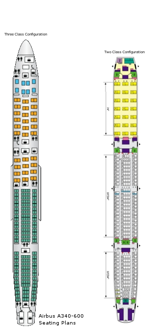

Description
Author of this aircraft: Liam Gathercole.
liam.gathercole@gmail.com
With thanks to:
Michael Gilliat
Isaías V. Prestes
Patrick Quaedackers
Julio Coello
XSaint
Malikrocks
Heiko Schulz
Gijs de Rooy
Thomas Bredwin
Thanks to the names above for providing relevant resources in the creation process, both directly and indirectly,
aswell as being helpful figures.
More documentation on this project including the Changelog and others are available in the A340-600/Documentation/
folder provided.
User guide:
-------------------------------------------------------------------
Installation:
Once you have Downloaded the .zip file of this aircraft, Extract it onto your hard drive. Then Extract it, and place the containing "A340-600" File into your Flightgear/Data/Aircraft/ folder.
Load up Flightgear and select the Airbus A340-600 plane.
-------------------------------------------------------------------
Airbus A340-600:
The Airbus A340-600 is revolutionary in quad-engine design, smooth flying and larger passenger and baggage capacity. The heavy weight of the aircraft makes it a stable joy to control as it glides smoothly down the tarmac, and lifting gently from the surfact as its four roaring, powerful engines climb and make it an amazing plane to fly in Flightgear.
Experience in flying in Flightgear with other long-range jetliners such as the 777-200ER, 787, etc is recommended, as there is yet no tutorials in this aircraft itself, but you can find basic help on starting up in the Help dialog (By pressing the "?" key in the simulator). To start the engines automatically, Click on the Autostart button under the A340-600 button.
Airbus has many different systems compared against other Boeing equivalents, so it is also reccomended that you understand operation controls which differ between the two. I reccomend flying the Airbus A320 in flightgear, or perhaps more closely related (to the A340), the A380 which has systems accurate to all modern Airbus aircraft.
--
Contrails:
Aircraft Vapour trails will appear automatically as you reach 19,000ft, where the temperature is cool enough for them to form.
Lights:
Strobe lights, Landing Lights, Navigation lights and Beacon lights will be switched in the on position on startup, ready for you to depart safely, and will be automatically switched off when the engines are shut down completely (by selecting autostart back off).
Airport Operations:
Various fuel trucks, baggage equipment and passenger services can be used on the aircraft by opening the Airport Operations dialog under the A340-600 button in the simulator.
Pushback:
The pushback truck should be used to tow the aircraft back from the terminal. It can be controlled by opening the Pushback dialog in sim. Do not pushback from the terminal under engine power, until on the taxiway.
Aircrew announcements:
The announcements dialog can be opened in sim by selecting A340-600>Announcements. This gives a selection of voice sounds to be played. To hear them well, you should switch to an interior view.
Walk view:
You can walk around the cabin when in an interior view by pressing w (lower case) to walk forward and W (capital case) to walk backwards, whichever direction you are facing. Hold it down to move faster.
GWPS:
The Ground Proximity Warning System is installed in this aircraft, In the cockpit view you will hear altitude callouts as you decend through 1000ft towards any runway location.
Liveries:
You can switch between multiple airliner repaints by clicking on the A340-600 button in the simulator, then clicking on Select Livery as the dropdown box appears. This will open a small box providing a list of airlines to switch between. All airline repaints in this package are operated in real life, and it is recommended that you please do not create fictional liveries for this aircraft, to keep the simulator as realistic as possible.
-------------------------------------------------------------------
Interior:
This model for FlightGear is modelled with a two class configuration interior. It contains the Business class, and two Economy class sections. To reduce lag these are only visible from interior views, so there may be a slight delay when you switch to an interior view as it loads.

Have any problems with this aircraft? please share your bugs/suggestions/comments/etc on the Flightgear official Forums.
Want to see improvements?
If you wish to create improvements to this aircraft (I am very keen for you to help!), email me at liam.gathercole@gmail.com. Progress with this aircraft will always continue, But it will happen better and three times as fast if other and more knowledgable users are able to assist. Creating new textures or better details for our original ones is also welcome, so please share them with us.
This model is protected under GNU GPL as stated in the GNU GPL text file provided. Only the respected author has the right to change the GNU GPL text file, and it must remain intact.